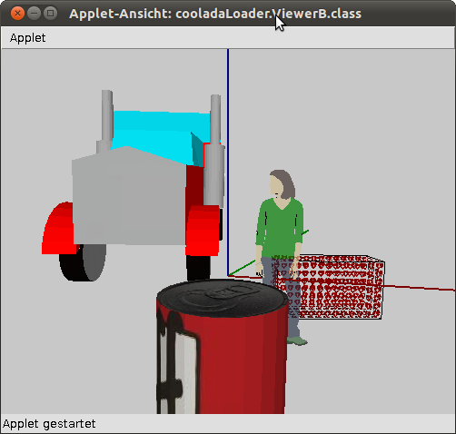

| Packages | |
|---|---|
| cooladaLoader | |
| cooladaLoader.xmlMapping | |
Welcome to the User-Manual for ColladaLoader
The colladaLoader is a java import library to view Google Sketchup files (dae and kmz) inside a Processing IDE
What are the features?
What are the needs?
The importer is tested with latest Sketchup release 8.0.16846 12/19/2012
Please note that:
(To handle it read instructions further down)
Download where?
Install it as plugin with Library Manager:
Choose menubar "Sketch" → "Import Library..." → "Add Library..."
then search for "Collada Loader"
Or get latest version here as zip.
Older library versions won't work with Processing version 2.0 so they're removed from net.
Step 1: Prepare an existing model
(older files contain another XML-tree)
Zoom back press CTRL+A then mouse rightclick and choose "explode" (Fig 1).
Save and re-open the model
Do mouse rightclick on each faces which have textures applied and choose "Make Unique Texture" (Fig 2)
Fig 1: ColladaLoader throws Java Exceptions if you don't ungroup the entire model or you try to load old kmz / dae versions.
Zoom{kind=link}
Fig 2: Processing produces blurred graphics on the sketch if you don't apply that step. This menu item is not available if SketchUp already considers the texture to be 'unique'.In this example: Susan contains no textures but the wall does.
Zoom{kind=link}
Step 2: Export as kmz or dae
Considering the rules of Sketchupversion groups and textures, export the model into Processing now:
Step 3: Run Processing
The examples folder contain a demo.pde which shows the usage of the library. The very basics to run ColladaLoader is adding the following code into Processing sketch:
class header
ColladaLoader model2;
setup() section
size(500, 500, OPENGL);
model2 = new ColladaLoader("susan.kmz",this);Your'e able to instantiate more than one model. ColladaLoader loads in different ways so there exist 3 reserved file suffixes for it:
draw() section
model2.draw();
Take a note that Processing zero points start not in the middle of the sketch and some translations may be nessessary before drawing.
Troubleshooting
The loading or drawing of 3D models claim lots of CPU time and RAM. That may produce several runtime problems such as deadlocks JVM access violations JOGL Exceptions or unexpected terminatings without errors. It can be assumed that the model has been loaded into memory correctly (consistent data) if no explicit "ColladaLoaderException" occurs. There is some ways to improve the performance:
Wait with key press until the model loading has finished. (on Ubuntu natty 32 occured that problem)
Interface usage
Class ColladaLoader
The class cooladaLoader.ColladaLoader is the entry class and defines the interface too. Whose methods support all the features what is mentioned on the top of this doc. The required data to display the model is wrapped into two arrays which resides in this class:
The coordinate system and color range of Sketchup is converted into Processing specifications. Following a method/constructor list:
| ColladaLoader | |
|---|---|
| ColladaLoader(String,PApplet) |
Standart constructor to load the model
The String defines a file located in the data path. Files only can end with following suffixes:
".dae" or ".kmz" = Sketchup 8 files ".dat" = serialized objects created by ColladaLoader PApplet defines the current sketch. Colladaloader uses some of its convenient methods internally. Instantiating more than one model is valid. |
| void draw() | a convenient automatism to draw the model. Note that any model data changes at runtime is displayed immediately. |
|
Triangle[] getTriangles() Line[] getLines() |
Getter methods to access model data |
| void shift(float, char) |
translates the model. The changes won't be reseted at runtime
the float defines the length in pixels the char defines the 3D axis. Valid chars are: 'x', 'y', 'z' |
| void rotate(float, char) |
rotates the model. The changes won't be reseted at runtime
the float defines the angle in radiant the char defines the rotating axis. Valid chars are: 'x', 'y', 'z' |
| void scale(float) |
resizes the model. The changes won't be reseted at runtime
the float defines the scalefactor. 0.5f makes smaller, 2.0f makes bigger |
| void save(String) |
creates a serializable object and saves the
current condition of the model at runtime to a new file in data path
String defines the filename and must end with ".dat" |
Class Triangle and Lines
Those classes wrapp all required data to display the model. Each object contains data for one entity. It correlate to coordinates and texture formates of Processing and supports read/write access. Here is a list of properies:
| Triangle | |
|---|---|
| Point3D A, B, C |
Vertex coordinates: Each Point3D contains 3 floats (x, y, z)
Example for r/w access: "myTriangle.A.x" |
| Point2D texA, texB, texC |
Image coordinates for each vertex: Each Point2D contains 2 floats (x, y). If no texture exist for this shape the value is null
Example for r/w access: "myTriangle.texA.x" |
| Color colour |
Defines the color of this shape. It contains 4 floats: red, green, blue, transparency. If any texture exist for this shape the value is null
Example for r/w access: "myTriangle.colour.red" |
| boolean containsTexture | Defines the draw handling. The value is true if any texture exist for this entity. Don't overwrite it. |
| String imageFileName | The name of the texture. Don't overwrite it |
| PImage imageReference | Is used from Processing to draw the texture. Don't overwrite it. |
| Line | |
|---|---|
| Point3D A, B |
Vertex coordinates: Each Point3D contains 3 floats: x, y, z
Example for r/w access: "myLine.A.x" |
| Color colour |
Defines the color of this shape. It contains 4 floats: red, green, blue, transparency.
Example for r/w access: "myLine.colour.red" |
Detailed specifications
{kind=link}
{kind=link}
References
Last Update: May 2013
(inserted by command 'javadoc -overview "D:\daten\Eclipse Projects\colladaLoader\docRessource\introDoc.htm"')
|
||||||||||
| PREV NEXT | FRAMES NO FRAMES | |||||||||